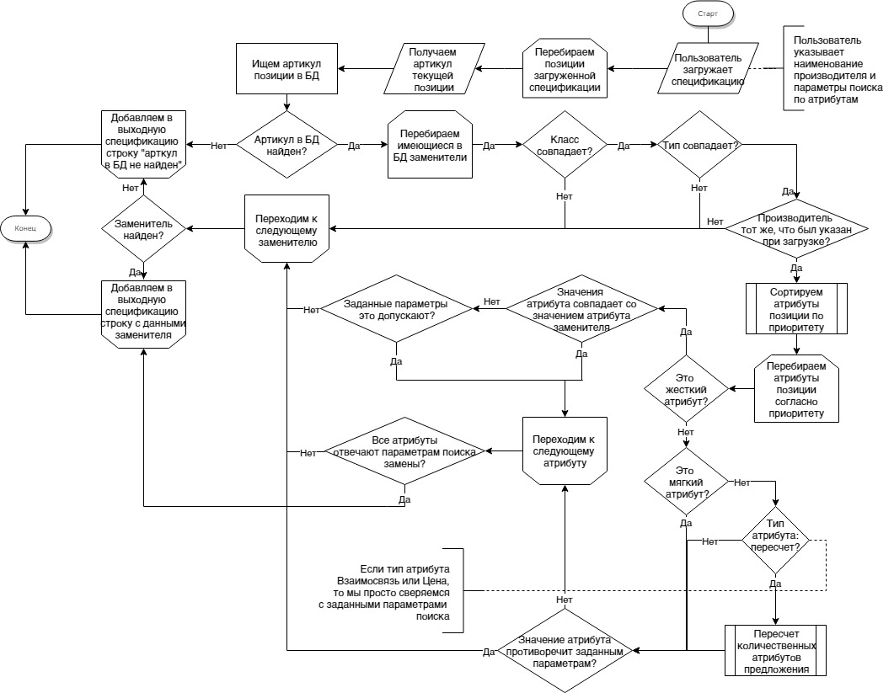
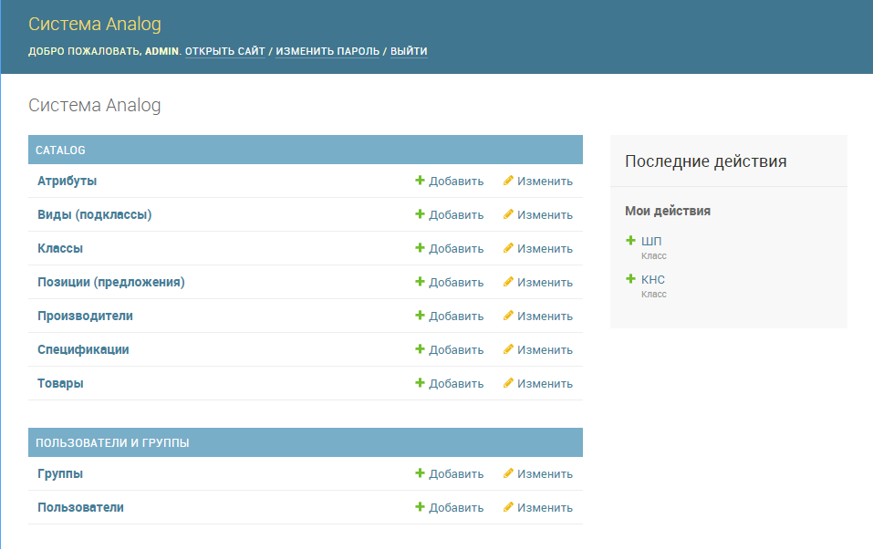

Проектное решение по разработке Системы Analog¶
1. Определения, сокращения и аббревиатуры¶
| Аббревиатура | Термин | Определение |
|---|---|---|
| Сущность | Тип сведений, хранящихся в Базе данных, имеющих одинаковые по структуре свойства (поля) | |
| Экземпляр сущности | Уникально идентифицируемая единица сведений, хранящихся в БД, относящаяся к какой-либо из сущностей Системы | |
| CRUD | create, read, update, delete — «создать, прочесть, обновить, удалить» | акроним, обозначающий четыре базовые функции, используемые при работе с персистентными хранилищами данных:
|
2. Общие сведения¶
Система Analog служит для подбора аналогов позиций спецификации предложений товаров, а также для учета производителей, товаров, предложений производителей и т. д.
3. Бизнес-процессы¶
3.1 УЧЕТ ЭКЗЕМПЛЯРОВ СУЩНОСТЕЙ
| Шаг 1: | Пользователь с правами Администратора авторизуется в АРМ Администратора |
|---|---|
| Шаг 2: | Открывает табличное представление справочника, в который требуется внести изменение |
| Шаг 3: | Внесение изменений:
|
3.2 ПОДБОР АНАЛОГОВ
| Шаг 1: | Пользователь авторизуется в системе |
|---|---|
| Шаг 2: | Выбирает пункт меню – загрузить спецификацию. Открывается окно с выбором файла для загрузки. После нажатия ОК, появляется форма, в которой необходимо выбрать производителя, на котором сделана загружаемая спецификация. Производитель выбирается из выпадающего списка. Подтверждается нажатием ОК. |
| Шаг 3: | Внесение параметров подбора: После загрузки спецификации и выбора производителя, появляется окно с формой запроса параметров подбора спецификации-аналога. Форма описана в разделе 6.3 форма запроса параметров подбора спецификации-аналога. |
- Алгоритм поиска замены
Загруженная спецификация отрабатывается построчно. Каждой строке в выходной спецификации должна соответствовать строка исходной спецификации.
Для каждого артикула i-той строки исходной спецификации производится поиск записи в БД. В случае, если артикула исходн.спецификации в БД нет – в этой строке выходной спецификации указывается – артикул в БД не найден.
Если артикул найден, то с учетом данных найденной записи производится поиск записи аналога. Поиск производится с учетом того, что поля Класс, Тип должны полностью совпадать с параметрами записи исходной позиции, поле Производитель – с наименованием Производителя выбранном в форме запроса.
Поиск по атрибутам производится последовательно. Т.е. первый атрибут имеет больший приоритет перед последующим. Для жестких атрибутов требуется полное совпадение значений с исходной записью, если иное не указано в форме запроса. Для мягких атрибутов совпадения ищутся исходя параметров по умолчанию, если иное не указано в форме запроса.
После выбора позиции производится анализ атрибутов Пересчет, Взаимосвязь и Цена. Для атрибута Пересчет должен производится пересчет количества с округлением вверх до целого элемента.
Выходная спецификация должна быть составлена в тех же ед. измерения, что и входная.
Блок-схема алгоритма подбора замены:
| Шаг 4: | Сохранение результатов После проведения поиска у пользователя запрашивается место для сохранения файла с результатом. Результат сохраняется в формате эксель. Столбцы – номер п/п, артикул, наименование, кол-во, ед.изм. В выходной спецификации на каждый элемент исходной спецификации должен быть представлен аналогичный элемент в выходной спецификации (с учетом параметров «взаимосвязь» общее количество элементов может незначительно отличаться). На один элемент исходной спецификации НЕ может быть представлено несколько вариантов в выходной спецификации Пользователь может определять формат вывода информации – указывать какие столбцы должны быть в «выходной» спецификации. В БД должны сохраняться все произведенные подборы в формате – «исходная спецификация – выходная спецификация» – с возможностью выгрузки для администратора единой совмещенной таблицы для удобного анализа – что было на входе, что стало на выходе. |
|---|
4. Декомпозиция архитектуры¶
4.1 АРМ Пользователя¶
Доступ предоставляется всем пользователям Системы.
Содержит следующий функционал:
- Загрузка спецификации и подбор аналогов
- Отображение ранее загруженных спецификаций
- Настройки пользователя (например, смена пароля)
4.2 АРМ Администратора¶
Доступ предоставляется только пользователем с ролью Администратор.
Включает следующий функционал:
| Функционал прикладного администратора: | |
|---|---|
Раздел учета прикладных экземпляров сущностей, касающихся работы со спецификациями и подбора аналогов предложений |
|
| Функционал систменого админисратора: | |
Раздел учета пользователей и групп и настройки прав доступа. Содержит подразделы Пользователи и Группы, которые должны быть реализованы в виде представления 6.1 таблица/перечень. Права доступа могут быть назначены как Пользователю, так и Группе пользователей. По умолчанию должны генериться CRUD-права на каждую из сущностей. Т. е. по четыре разных права (создание, редактирование, просмотр и удаление). Перечень дополнительных прав будет выявлен в процессе разработки. |
|
Пример реализации АРМа Администратора
5. Сущности¶
Все нижеописанные сущности должны расширять базовую, содержащую следующие ее поля:
- Уникальный идентификатор (системное поле)
- Номер ревизии (системное поле)
- Кто создал (взаимосвязь с Пользователем)
- Когда создал (дата и время)
- Кто последний обновил (взаимосвязь с Пользователем)
- Когда обновил (дата и время)
- Опубликовано? (да/нет)
- Признак логического удаления/перемещения в архив (да/нет)
- Пенречень сущностей:
- Производитель
- Класс
- Тип
- Атрибут
- Значение атрибута
- Товар
- Предложение
- Спецификация
- Пользователь
- Группа пользователей
5.1 производитель¶
Экземпляром сущности производитель является поставщик предложений товаров.
Удаление экземпляра данной сущности должен отправлять его в архив. В архив также должны быть отправлены все предложения данного производителя. Записи архива не учавствуют в подборе аналогов.
| Поля: |
|
|---|
5.2 класс¶
Экземпляром сущности класс является крупная товарная категория.
| Поля: |
|
|---|
5.3 тип¶
Подгруппа товаров внутри каждого класса, для более удобного поиска и классификации. Внутри одного Типа каждого Класса задействованы одинаковые Атрибуты для всех позиций.
| Поля: |
|
|---|
5.4 атрибут¶
Экземпляром сущности атрибут является характеристика товара.
Атрибуты разделены на типы - *Жесткий, Мягкий, Пересчет, Взаимосвязь, Цена
При поиске первоочередность атрибута имеет значение. Пример – атрибут B1 приоритетнее атрибута B2.
Жесткий атрибут, группа А – как правило, такой тип жестко определяет подгруппу или свойство товаров, к которой должен относиться подбираемый аналог. Такой параметр жестко определяет важные свойства товара.
По умолчанию все жесткие атрибуты подбираемого аналога должны в точности соответствовать жестким атрибутам исходной позиции
Пример алгоритма: «продукт - кабельный лоток прямая секция, покрытие – холодный цинк, ширина – 500». Все перечисленные атрибуты должны в точности совпадать с подбираемым аналогом.
Мягкий Атрибут, группа B – как правило, такой тип имеет незначительную вариативность конкретного свойства товара у разных производителей. Как правило, отличия этих свойства не являются определяющими и критическими, однако требуют уточнения для нахождения аналога в процессе поиска. Также такой тип параметра требует уточнения принципа поиска, который задается при формировании запроса на подбор аналогов.
Пример алгоритма подбора - Мягкий атрибут для продукта каб.лоток прямая секция – «толщина – 0,8мм, высота борта – 50мм». При наличии нескольких вариантов выбора (т.е. все жесткие атрибуты совпадают), необходимо осуществлять подбор с учетом расширенных – мягких атрибутов.
По умолчанию – подбирается позиция с наиболее арифметически близким значением.
По умолчанию – приоритет подбора атрибутов – по порядку. Т.е. первоочередность атрибута имеет значение. Пример – атрибут B1 приоритетнее атрибута B2.
При условии указаний пользовательских критериев поиска - критерии задаются в форме запроса. Примеры критериев подбора для параметра «толщина»: не более, чем … мм, выбрать минимальный из имеющихся, выбрать максимальный из имеющихся, выбрать наиболее близкий к исходному.
Атрибут Пересчет, группа C – подобранный элемент-аналог может совпадать по всем заданным параметрам, однако иметь другой размер. Например, длина исходной секции – 3000мм, а длина подобранного и полностью подходящего по всем параметрам аналога составляет 2000мм. В этом случае, необходимо соответствующим образом, пересчитать количество товара в «выходной» спецификации.
Пример алгоритм подбора параметра Пересчет - в исходной спецификации количество может быть задано как в штуках, так и в метрах. Если задано в метрах – пересчитывать не нужно. Если задано в штуках, то необходимо:
- уточнить – есть ли разница в длине кабельных лотков – исходного и подбираемого
- Если разница есть, то перевести исходное кол-во в метры, а затем метры поделить на длину подбираемого лотка, округлить в большую сторону.
Атрибут Взаимосвязь – определяет наличие взаимосвязей между элементами. Так, например, для крепления крышки у одного производителя не требуется доп.элементов, а у другого необходимы клипсы.
Атрибут Цена – без комментариев
Пример
| атрибуты | |||||||||||||||||||
| А1 | А2 | А3 | А4 | А5 | B1 | B2 | B3 | B4 | C1 | C2 | C3 | D1 | D2 | E1 | E2 | ||||
| тип атрибута | |||||||||||||||||||
| ключевые параметры записи | жесткий | жесткий | жесткий | жесткий | жесткий | мягкий | мягкий | мягкий | мягкий | пересчет | пересчет | пересчет | взаимосвязь | взаимосвязь | цена 1 | цена 2 | |||
| пользовательское название артибута для конкретного класса | |||||||||||||||||||
| класс | тип | арт | производитель | вид | покрытие | ширина, мм | резерв | резерв | толщина, мм | высота борта, мм | резерв | резерв | длина,мм | ед.изм. | резерв | крепление | резерв | руб. | резерв |
| КНС | прямая секция | 101010 | А | перф. | сендзимир | 200 | 0,8 | 80 | 3000 | штуки/метры | компл.соединителя, 1шт, арт ХХХ | ||||||||
| класс | тип | арт | производитель | вид | проводник | номинал, А | кол-во проводников | класс IP | корпус | резерв | резерв | резерв | длина,мм | штуки/метры | резерв | резерв | резерв | руб. | резерв |
| ШП | поворотный модуль | 40932 | ХХ | распреде- лительный | Алюм. | 2000А | 4 | IP55 | сталь | ||||||||||
| Поля: |
|
|---|
5.5 значение атрибута¶
Экземпляр сущности значение атрибута представляет собой значение одного атрибута одного из товаров.
| Поля: |
|
|---|
5.6 товар¶
Экземпляр сущности товар фактически представляет собой группу предложений, которые принадлежат одному типу и имеют одинаковые значения всех атрибутов за исключением атрибутов типа цена.
Удаление экземпляра данной сущности должен отправлять его в архив. В архив также должны быть отправлены все предложения данного товара. Записи архива не учавствуют в подборе аналогов.
> Необходимость в данной сущности под вопросом!
| Поля: |
|
|---|
5.7 предложение¶
Предложение принадлежит какому-либо производителю и только одному. Также ссылается только на один товар.
Удаление экземпляра данной сущности должен отправлять его в архив. Записи архива не учавствуют в подборе аналогов.
| Поля: |
|
|---|
5.8 спецификация¶
Экземпляр сущности спецификация представляет собой загружаемую группу предложений с целью поиска их аналогов.
| Поля: |
|
|---|
5.9 Пользователь¶
| Поля: |
|
|---|
5.10 Группы пользователей¶
| Поля: |
|
|---|
6. Представления¶
6.1 таблица/перечень¶
Представляет собой страницу Системы с размещенной на ней таблицей с данными.
Данное представление должно предусматривать:
- Прямую и обратную сортировку по одной или нескольким колонок. На случай сортировки по нескольким колонкам должна быть предсмотрена возможность выставления приоритета сортировки.
- Фильтрацию по заранее определнным колонкам. Фильтрация по колонке может быть представлена в виде поиска: - поиска по колонке; - в виде выбора значения из справочника; - выбор заранее определенного диапозона значений; - иные фильтры четко описанные в разделе 5. Сущности.
- Возможность применения действия (например, отправка в архив) к нескольким записям одновременно.
- Отображение общего количества записей в данной таблице.
- При большом количестве строк - разбиение на страницы.
- Импорт данных из XLS.
- Экспорт данных в XLS.
6.2 карточка экземпляра сущности¶
Представляет собой страницу Системы с размещенной на ней информацией о создаваемом или существующем экземпляре сущности.
Данное представление должно предусматривать возможность редактирования каждого из полей экземпляра сущности, доступного для редактирования.
Здесь же должна бытьотображена информация об истории изменения данного экземпляра сущности.
6.3 форма запроса параметров подбора спецификации-аналога¶
Форма состоит из трех частей.
| Первая часть: | «автоматический подбор» Из выпадающего списка выбирается производитель, на котором будет сделана исходящая спецификация. Внизу формы две кнопки – Атрибуты и ОК. При выборе ОК – начинается подбор. Атрибуты – расширение формы вниз. |
|---|---|
| Вторая часть: | Форма динамическая! В этой части формы – перечень «мягких» атрибутов для каждого класса. Напротив каждого атрибута – значение по умолчанию с выпадающим списком возможных вариантов выбора. В форму выбираются только те атрибуты тех классов, товары которых есть во входной спецификации. «Лишние» классы и атрибуты выводиться в форме не должны. Возможно разделение по классам для простоты понимания. Галочка к атрибуту «пересчет» Внизу также кнопки – Доп.атрибуты и ОК. при выборе ОК – начинается подбор. Доп.Атрибуты – еще расширение формы вниз. |
| Третья часть: | В этой части формы – перечень «жестких» атрибутов для каждого класса. Форма также динамическая. Напротив каждого атрибута – значение по умолчанию с выпадающим списком возможных вариантов выбора. |
7. Группы¶
| Администратор: |
|
|---|---|
| Менеджер: | (клиент Системы)
|
8. Справочники и классификаторы¶
Нижеописанные записи в справочниках, являются примерами, полный перечень справочников и записей в них будет выявлен в процессе разработки.
| Производители: |
|
|---|---|
| Классы: |
|
| Типы: |
|
| Атрибуты: |
|
| Типы атрибутов: |
|
9. Требования к отказоустойчивости¶
Требуется выполнять резервное копирование БД 1 раз в сутки в ночное время.